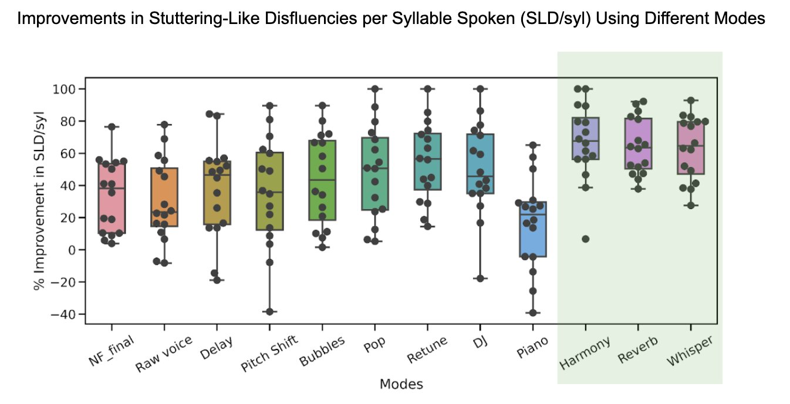

Overall Aim:
To increase stuttering fluency utilizing altered auditory feedback (AAF) in the form of a mobile application.
Members:
Rébecca Kleinberger, Alisha Kodibagkar, Megha Vemuri, Akito van Troyer, Satrajit Ghosh
Specific Goals:
Project Description:
Stuttering is a condition characterized by involuntary, periodic disturbances in speech fluency, usually via sound repetitions, blockages, or prolongations. This condition improves when an individual’s speech is played back to him or her in an altered manner, most famously when delayed by fractions of second, but also when the frequency is shifted, when masked with white noise, and when reading in choral speech. This rather interesting phenomenon of altered feedback-induced fluency is theorized to result from a reduced ability to detect small errors in articulation that occur in stuttering, which reduces its inhibition on speech initiation and output via the feedback mechanism.
In people who stutter, there is both structural and functional evidence of atypical hemispheric lateralization of speech and language. People who stutter, when speaking fluently, tend to activate the right hemisphere during speech tasks. The white matter integrity is disrupted on the left. This rightward shift of speech function may be compensatory (as opposed to causal). Trials comparing fluent versus nonfluent trials in people who stutter reveal the former to be associated with activity in the right hemisphere and latter with the left hemisphere. In addition, white matter integrity is negatively correlated with severity of disfluency on the left, and positively correlated on the right. The overall notion is that stuttering is associated with atypical left-sided speech mechanisms and that this can be overcome, at least partially, when the right hemisphere is able to effectively compensate. While most prominently explored in stuttering, the idea that left hemisphere lesions can be overcome by shifting the motor control of speech to the right is supported by other studies in post-stroke aphasia.
In this light, altered auditory feedback (AAF) – a fluency-inducing intervention in stuttering — is associated with activity in right hemispheric sensory, motor, and language areas. In addition, singing — another fluency-evoking task — is known to activate right hemisphere motor areas compared with non-musical speech production.
Mumble Melody is interested in working with people who stutter (PWS) to improve their fluency utilizing this information. We have created a mobile application that is designed to transform the user’s voice through their microphone input and play it back to their headphones in real time. These transformations, or modes, come in the form of AAF with options to play the voice unaltered, reverberated, whispered, or with a harmonious effect. This tool is meant to be more efficient, affordable, and simple than the traditional AAF devices or other stuttering therapies.
Publications:
Kleinberger Rébecca, George Stefanakis, Satrajit Ghosh, Tod Machover, Mike Erkinnen: Fluency Effects of Novel Acoustic Vocal Transformation in People Who Stutter: An Exploratory Behavioral Study SNL 2019: Society for the Neurobiology of Language, Helsinki, Finland, August 2019